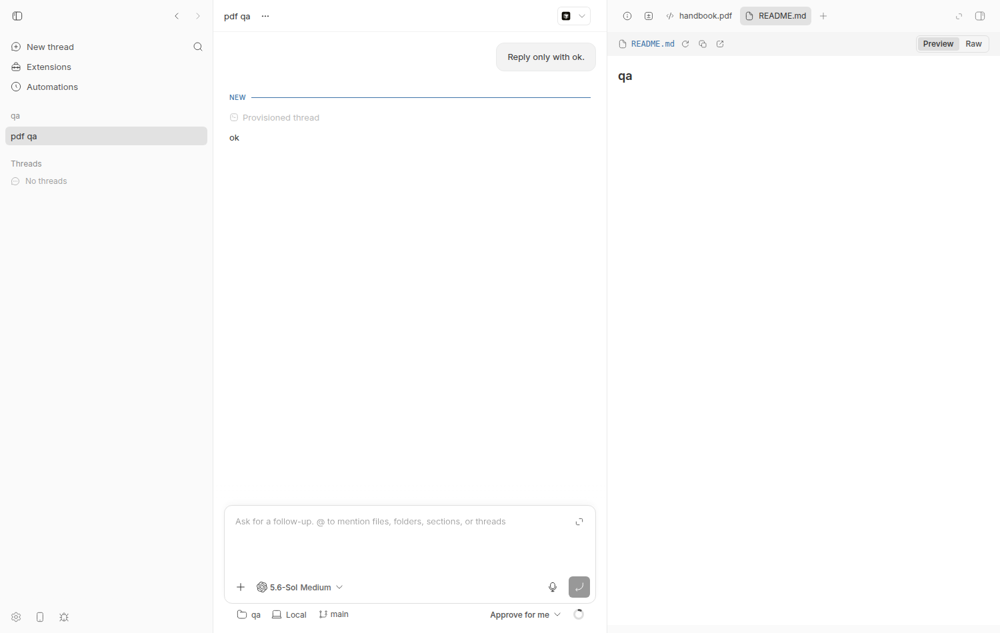
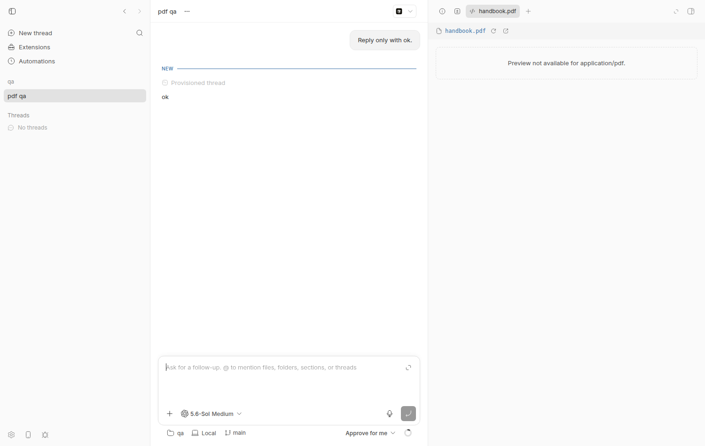
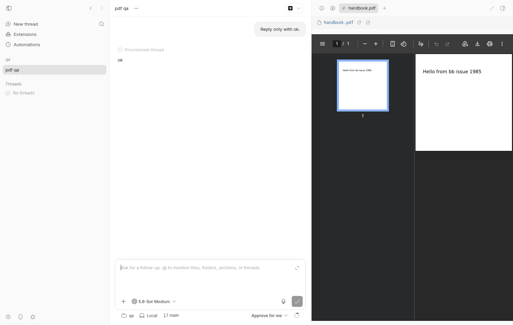
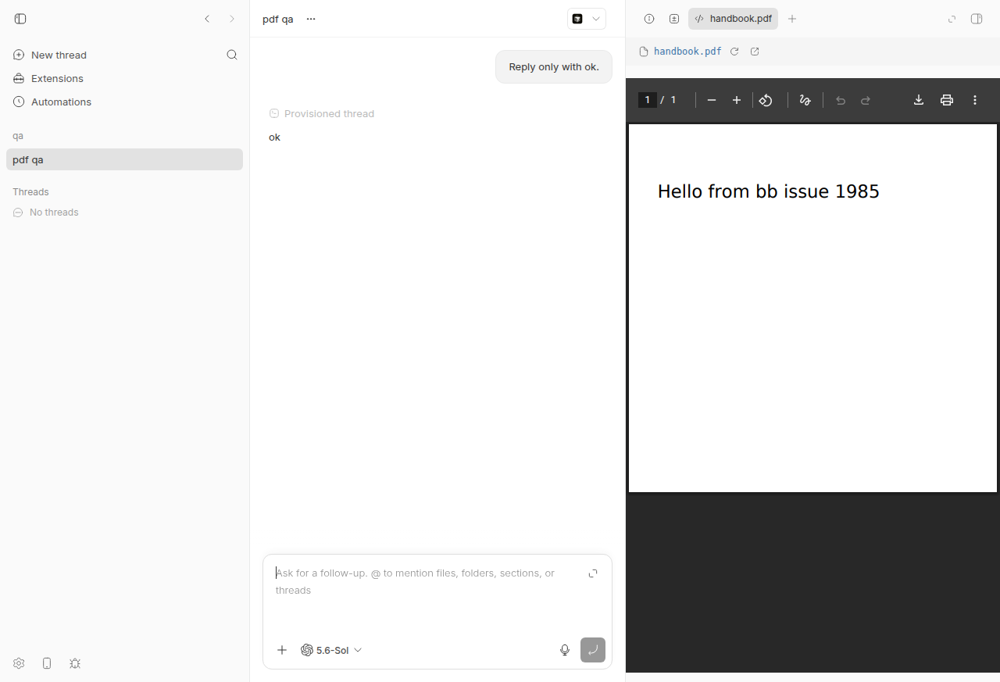
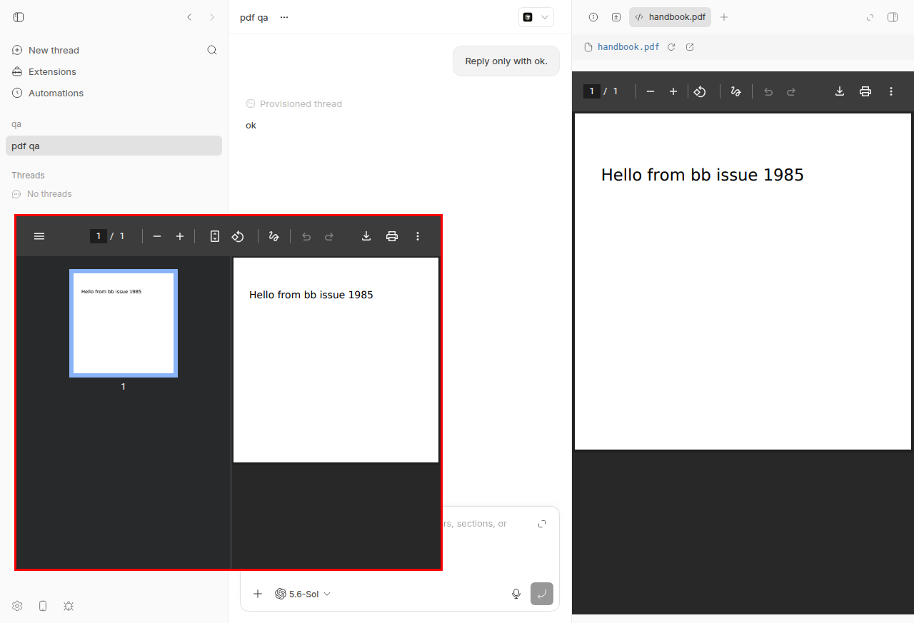
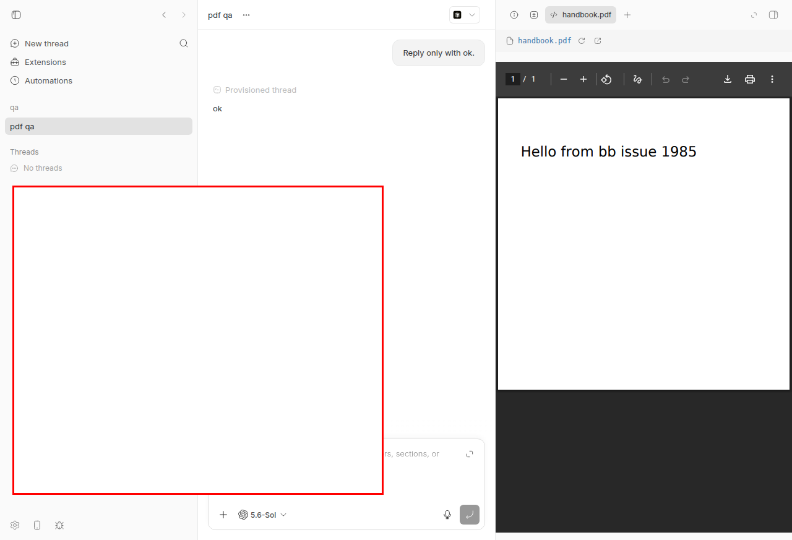

#1985 · PDF file previews show "Preview not available for application/pdf"
Verdict: REPRODUCED · Root-cause confidence: high
1. TL;DR
Opening any real-world PDF in the secondary-panel file preview (workspace file tab, host file, project file, or thread storage) shows the dashed error card Preview not available for application/pdf. instead of the document. The server side is fine: the content routes return 200, content-type: application/pdf and the exact bytes. The gap is purely in the shared client classifier buildFilePreview() (now in packages/client-core/src/file-preview.ts after #1986 moved it out of apps/app): it recognises image/*, a list of text mime types, a UTF‑8 fallback and video/*, and anything else becomes kind: "unsupported", which SecondaryPanelFilePreview renders as that error message. A side effect of the UTF‑8 fallback is that an all‑ASCII PDF (no compressed streams) is not "unsupported" at all — it is shown as plain text of PDF markers. PR #1979 adds a pdf kind rendered via an un-sandboxed <iframe> and works in both Chromium and Electron 41 in my testing, but it is currently CONFLICTING with main and, once rebased onto the shared @bb/client-core module, breaks the @bb/mobile typecheck.
2. Claims vs findings
| Claim from the issue | Status | Evidence |
|---|---|---|
Opening a PDF in the preview panel shows Preview not available for application/pdf. | Verified | Live repro on c7c66423d, screenshot 1985-bug.png; unit test file-preview-pdf-repro.test.ts fails with expected 'unsupported' not to be 'unsupported'. |
| Content routes already serve the bytes with the correct mime type. | Verified | curl -sD - .../projects/proj_…/files/content?path=handbook.pdf → 200, content-type: application/pdf, content-length: 632, bytes identical to the file (cmp). |
buildFilePreview checks image, known text, UTF‑8 fallback, then video; application/pdf matches none → unsupported. | Verified | Code at client-core/src/file-preview.ts#L232-L281 (moved from apps/app/src/lib/file-preview.ts by d678d65c4, logic unchanged). Nuance: an uncompressed all-ASCII PDF hits the UTF‑8 fallback and renders as text, not "unsupported" (second test in the repro file, passes on main). |
Code path unchanged on main at b61ec88. | Verified (with caveat) | True at b61ec88. Between b61ec88 and c7c66423d, #1986 relocated the file to packages/client-core; behaviour identical, but the location matters for PR #1979 (see §7). |
| Images, video, CSV and markdown render. | Verified | README.md renders in the same panel (1985-before.png); image/video/CSV branches exist in the same function. |
| Path header and open-in-editor action render normally; only the body shows the error. | Verified | See 1985-bug.png: header with path, refresh and open icons; body shows the dashed error card. |
| Not a duplicate; #1670 (HEIC) is a different format. | Verified | gh issue list --search pdf shows no other PDF preview issue; #1670 is about HEIC decoding. |
Chromium renders a PDF with its built-in viewer when a frame loads an application/pdf response; fix is one new preview kind plus an iframe. | Verified | PR #1979 merged locally onto c7c66423d renders the PDF in headed Chromium (1985-pr1979-pdf.png) and in Electron 41.7.0 (1985-desktop-pr1979.png, …-apiurl.png). |
| Observed in packaged 0.39.0 desktop app on macOS 26. | Unverified (platform) | I reproduced on Linux in the web app and confirmed the Electron desktop shell shows the same classifier output; macOS not tested, but the code path is platform-neutral. |
{kind=link}
{kind=link}
{kind=link}
{kind=link}
{kind=link}
3. Environment
- bb commit
c7c66423d55c320bab9103218f0ffef1a8191331(origin/main, 2026-08-20); no later commit on origin/main touches the preview classifier. - Linux 7.0.0-29-generic, Node v24.18.0, Electron 41.7.0 (Chrome 146.0.7680.216), Playwright Chromium 1228 (headed, under Xvfb :150), codex-cli 0.148.0 (only used for a one-line "Reply only with ok." turn to provision a thread).
- Dev instance:
scripts/bb-dev-app current→ Apphttp://localhost:14918, Serverhttp://localhost:22918, Host daemon127.0.0.1:30918, data dir~/.bb-dev/projects-bb-.claude-worktrees-wf_926b3193-f6c-6-f628a94ebc23(deleted at cleanup). - Scratch repo
/tmp/bb-1985-qacontaininghandbook.pdf(632-byte one-page PDF with a FlateDecode stream, generated by Python; copy in1985/repro/handbook.pdf).
4. Minimal reproduction
4a. Unit-level (fails on main)
- Save
file-preview-pdf-repro.test.tstopackages/client-core/test/and run:cd packages/client-core && pnpm exec vitest run test/file-preview-pdf-repro.test.ts
expected: both tests pass (a binary application/pdf gets a renderable kind) actual: RUN v4.1.1 /home/USER/projects/bb/.claude/worktrees/wf_926b3193-f6c-6/packages/client-core ❯ @bb/client-core test/file-preview-pdf-repro.test.ts (2 tests | 1 failed) 4ms × a real (binary) PDF served as application/pdf should get a renderable preview kind 3ms ⎯⎯⎯⎯⎯⎯⎯ Failed Tests 1 ⎯⎯⎯⎯⎯⎯⎯ FAIL @bb/client-core test/file-preview-pdf-repro.test.ts > #1985 PDF file preview > a real (binary) PDF served as application/pdf should get a renderable preview kind AssertionError: expected 'unsupported' not to be 'unsupported' // Object.is equality ❯ test/file-preview-pdf-repro.test.ts:29:30 27| // On main this is "unsupported", which ThreadStorageFilePreview r… 28| // `Preview not available for application/pdf.` 29| expect(preview.kind).not.toBe("unsupported"); | ^ 30| }); 31| ⎯⎯⎯⎯⎯⎯⎯⎯⎯⎯⎯⎯⎯⎯⎯⎯⎯⎯⎯⎯⎯⎯⎯⎯[1/1]⎯ Test Files 1 failed (1) Tests 1 failed | 1 passed (2) Start at 14:12:21 Duration 117ms (transform 18ms, setup 0ms, import 28ms, tests 4ms, environment 0ms)The first assertion fails becausebuildFilePreviewreturnskind: "unsupported". The second test passes and documents the less obvious half: an all-ASCII PDF is classified astext.
// Repro for get-bb/bb#1985: PDF previews fall through to `unsupported`.
// Run: cd packages/client-core && pnpm exec vitest run test/file-preview-pdf-repro.test.ts
import { describe, expect, it } from "vitest";
import { buildFilePreview } from "../src/file-preview.js";
// Header + a binary (deflate) stream with bytes that are not valid UTF-8,
// which is what every real-world PDF looks like.
const BINARY_PDF_BYTES = Uint8Array.from([
...new TextEncoder().encode("%PDF-1.7\n%"),
0xe2, 0xe3, 0xcf, 0xd3, // the conventional binary-marker comment bytes
...new TextEncoder().encode(
"\n1 0 obj\n<< /Length 8 /Filter /FlateDecode >>\nstream\n",
),
0x78, 0x9c, 0x00, 0xff, 0xfe, 0x01, 0x00, 0x80,
...new TextEncoder().encode("\nendstream\nendobj\n%%EOF\n"),
]);
describe("#1985 PDF file preview", () => {
it("a real (binary) PDF served as application/pdf should get a renderable preview kind", () => {
const preview = buildFilePreview({
contentBytes: BINARY_PDF_BYTES,
mimeType: "application/pdf",
name: "handbook.pdf",
path: "docs/handbook.pdf",
url: "/api/v1/threads/t1/host-files/content?path=docs/handbook.pdf",
});
// On main this is "unsupported", which ThreadStorageFilePreview renders as
// `Preview not available for application/pdf.`
expect(preview.kind).not.toBe("unsupported");
});
it("an all-ASCII PDF (no compressed streams) is NOT 'unsupported' but is mis-classified as text", () => {
const preview = buildFilePreview({
contentBytes: new TextEncoder().encode(
"%PDF-1.4\n1 0 obj\n<< /Type /Catalog /Pages 2 0 R >>\nendobj\n%%EOF\n",
),
mimeType: "application/pdf",
name: "flat.pdf",
path: "flat.pdf",
url: "/files/flat.pdf",
});
// Documents current behavior: the UTF-8 fallback wins, so the panel shows
// the PDF's markers as source text instead of a document.
expect(preview.kind).toBe("text");
});
});
4b. Live, in the app
- Start a dev instance:
scripts/bb-dev-app current; note App/Server URLs. - Make a scratch git repo with a PDF (any real PDF works; mine was generated with a small Python script, see appendix) and register it as a project:
curl -s -X POST $BB_SERVER_URL/api/v1/projects -H 'content-type: application/json' \ -d '{"name":"qa","source":{"type":"local_path","path":"/tmp/bb-1985-qa","hostId":"<host id from /api/v1/hosts>"}}' - Confirm the server serves the PDF correctly (this is the part the issue says already works):
$ curl -sD - -o /tmp/out.pdf "$BB_SERVER_URL/api/v1/projects/proj_cw26yy9qhd/files/content?path=handbook.pdf" HTTP/1.1 200 OK cache-control: private, no-cache content-length: 632 content-type: application/pdf etag: "cdabf618…" x-bb-content-encoding: base64 $ cmp /tmp/out.pdf /tmp/bb-1985-qa/handbook.pdf && echo BYTES_MATCH BYTES_MATCH
- Create a thread in that project (I used
POST /api/v1/threadswith a one-line prompt) and open it in a browser athttp://localhost:14918/threads/<thread id>. - Open the PDF in the panel from the CLI:
pnpm bb:dev thread open <thread id> handbook.pdf --json # → {"file":{"source":"workspace","path":"handbook.pdf"}, "delivered": 2, …} - Observe the panel.
expected: the PDF renders (like images / markdown do) actual: dashed card reading "Preview not available for application/pdf."

bb thread open path renders in the right-hand panel. The handbook.pdf tab is already open next to it.
handbook.pdf tab selected; the header shows the path with refresh/open-in-editor icons, the body shows only Preview not available for application/pdf.Repro files: 1985/repro/ (test, PDF, doobie scripts, logs, rebased PR diff).
5. Root cause
The client decides how to render a file purely from buildFilePreview() in packages/client-core/src/file-preview.ts#L232-L281 (re-exported by apps/app/src/lib/file-preview.ts):
if (args.mimeType.startsWith("image/")) return { kind: "image", ...base };
if (isKnownTextMimeType(args.mimeType)) { … return { kind: "text", … } }
const fallbackTextContent = decodeUtf8Text(args.contentBytes);
if (fallbackTextContent !== null) return { kind: "text", …, content: fallbackTextContent };
if (args.mimeType.startsWith("video/")) return { kind: "video", ...base };
return { kind: "unsupported", ...base };
Every real PDF contains compressed/binary streams (and usually the %âãÏÓ binary-marker comment), so decodeUtf8Text returns null and the function falls through to unsupported. SecondaryPanelFilePreview then maps unsupported to an error state at ThreadStorageFilePreview.tsx#L255-L269:
state={{ kind: "error", message: `Preview not available for ${filePreview.mimeType}.` }}
The mime type itself comes from the host daemon's extension lookup (mimeTypes.lookup(path) in file-read.ts#L259) and is passed through unchanged by createDaemonFileContentResponse (daemon-file-response.ts#L48-L63) with x-content-type-options: nosniff and no Content-Disposition, so the server really is ready to be framed. The same classifier feeds all four app surfaces (host files, project files, thread storage via loadFilePreview in apps/app/src/lib/api.ts; workspace files via buildEnvironmentFilePreview in environment-queries.ts) and, since #1986, the mobile app too.
Deeper/secondary issue: the ordering of the UTF‑8 fallback before any "known binary document" check means an uncompressed PDF is silently shown as source text (%PDF-1.4 1 0 obj << /Type /Catalog …) rather than flagged; any fix must classify by mime type before the fallback, as #1979 does.
6. Proposed fix (first principles)
- In
packages/client-core/src/file-preview.ts(notapps/app/src/lib/file-preview.ts, which is now a re-export), add aPdfFilePreviewkind and return it forapplication/pdfbefore the text checks. Export the type from client-core and the app re-export. - In
apps/app: add{ kind: "pdf"; url }toFilePreviewState, render an<iframe src={url}>with full-height layout (Chromium's viewer sizes itself to the frame). It must not carrysandbox— I verified in Electron 41 that evensandbox="allow-scripts allow-same-origin"leaves the frame blank (1985-desktop-sandbox-test.png). Route the kind inSecondaryPanelFilePreviewand includepdfin thedata:-URL rewrite inbuildEnvironmentFilePreview(workspace previews come from a JSON route). - In
apps/mobile: theswitch (preview.kind)insrc/data/files/file-preview-model.tsand the view insrc/screens/files/FilePreviewView.tsxmust handlepdf(at minimum map tounsupported; iOS/Android WebViews render PDFs natively, so a WebView would be the real fix). Without this the mobile typecheck fails (TS2366). - Risks: a 25 MB PDF (daemon non-image limit) becomes a ~33 MB base64
data:URL string on the workspace path; consider a byte route instead, or cap. A browser configured to "download PDFs instead of opening" will trigger a download when the tab opens. The Electron preload complains (sandboxed_renderer.bundle.js script failed to run) once in the console when a same-origin PDF frame loads; harmless but worth checking.
{kind=link}
7. PR review
PR #1979 — "Render PDF file previews instead of 'Preview not available'" (jsilets, head e93c47262, base b61ec88)
What it changes: adds a pdf kind to buildFilePreview (checked before the UTF‑8 fallback), a FilePreviewPdf iframe without sandbox, routing in SecondaryPanelFilePreview, pdf in the workspace data:-URL rewrite, a Ladle story, and three tests. No wire changes (correct — no protocol bump needed).
Does it address the root cause? Yes — it is the right layer (client classifier + app renderer), and the mime-before-fallback ordering also fixes the all-ASCII-PDF-as-text edge case. I merged it locally onto c7c66423d (resolving conflicts by moving the classifier hunk into packages/client-core/src/file-preview.ts; diff in pr-1979-rebased-onto-c7c66423d.diff) and it renders the PDF in headed Chromium and in the Electron 41 desktop shell, for both the data: URL (workspace) path and a framed /api/v1/…/files/content URL.

handbook.pdf tab now shows Chromium's PDF viewer with toolbar, thumbnail rail and the page text "Hello from bb issue 1985".
sandbox: true, contextIsolation: true, no plugins flag): the built-in viewer loads from a data:application/pdf iframe.
src="/api/v1/projects/…/files/content?path=handbook.pdf" (the host/project/thread-storage shape, no data: URL): the viewer loads too.
sandbox="allow-scripts allow-same-origin": blank. Confirms the PR's claim that the viewer cannot run in a sandboxed frame.Findings:
| Severity | Where | Finding |
|---|---|---|
| Blocking | whole PR | GitHub reports mergeable: CONFLICTING (merge-state.json). apps/app/src/lib/file-preview.ts and its test were moved to packages/client-core by #1986 (d678d65c4); the PR's classifier hunk and file-preview.test.ts hunk must be re-targeted to packages/client-core/src/file-preview.ts / packages/client-core/test/file-preview.test.ts, and PdfFilePreview added to the apps/app/src/lib/file-preview.ts re-export list. |
| Blocking (after rebase) | apps/mobile/src/data/files/file-preview-model.ts:81,101; apps/mobile/src/screens/files/FilePreviewView.tsx | Once FilePreview gains kind: "pdf" in the shared module, pnpm exec turbo run typecheck --filter=@bb/mobile fails: @bb/mobile:typecheck: src/data/files/file-preview-model.ts(81,36): error TS2366: Function lacks ending return statement and return type does not include 'undefined'.The exhaustive switch (preview.kind) needs a pdf case (map to unsupported or render in a WebView). The PR description claims "All four preview surfaces render PDFs" — mobile is a fifth consumer it did not know about at its base. |
| Medium | apps/app/src/hooks/queries/environment-queries.ts ~L481 | PDFs now pay the base64 data: URL cost like images, but the daemon caps images at 10 MB and PDFs at 25 MB (NON_IMAGE_FILE_SIZE_LIMIT_BYTES), so a large workspace PDF becomes a ~33 MB string held in the React Query cache and the iframe src attribute. No test covers the new pdf branch of buildEnvironmentFilePreview (existing tests at environment-queries.test.tsx:194 only cover image/text). |
| Low | FilePreview.tsx FilePreviewPdf | No loading/error handling, unlike IframeFilePreview: a 404/expired preview lease or a 413 renders the server's JSON error body inside the frame instead of the panel's error card. Also, browsers with "download PDFs instead of opening" enabled will trigger a download on every tab open. Acceptable for a first cut but worth a comment. |
| Low | un-sandboxed iframe | Security reasoning in the PR is sound: the mime type is extension-derived on the daemon, the server sets nosniff, and Chromium hands application/pdf to the out-of-process viewer, so renaming HTML to .pdf does not execute in the app origin. I could not make a sandboxed variant work (screenshot above), so dropping sandbox is necessary. Note that the viewer's link clicks and the Electron preload error (sandboxed_renderer.bundle.js script failed to run logged when a same-origin PDF frame loads) were not discussed. |
| Nit | FilePreview.stories.tsx L322-327 | Unrelated reformat of the lint.ts story (contents: … .split("\n") wrapped) that also conflicts with main; drop it on rebase. |
Tests I ran on the locally rebased PR: packages/client-core file-preview.test.ts (12 pass, including the two new PDF tests) and my repro test (first assertion now passes; the "all-ASCII is text" documentation test flips to pdf, as intended); apps/app FilePreview.test.tsx + src/hooks/queries (122 pass); turbo typecheck for @bb/client-core and @bb/app pass, @bb/mobile fails (above).
Verdict: REQUEST CHANGES — correct approach and verified working in Chromium and Electron, but it must be rebased onto the @bb/client-core move, handle the pdf kind in apps/mobile, and ideally add a test for the workspace data: URL branch.
8. Related issues
- #1979 — the fix PR reviewed above.
- #1986 — moved the classifier to
@bb/client-core; source of the PR conflict and of the mobile consumer. - #1670 — HEIC previews do not render (same class of gap, needs decoding rather than a branch).
- #520 — CSV previews; the precedent this change follows.
9. Appendix
Commands run
gh issue view 1985 --comments; gh pr view 1979; gh pr diff 1979 pnpm install --frozen-lockfile --prefer-offline; pnpm exec turbo run build cd packages/client-core && pnpm exec vitest run test/file-preview-pdf-repro.test.ts # fails on main (see §4a) scripts/bb-dev-app current # App :14918 Server :22918 daemon :30918 python3 … # generate /tmp/bb-1985-qa/handbook.pdf (FlateDecode stream) ; git init + commit curl -s -X POST $BB_SERVER_URL/api/v1/projects … path=/tmp/bb-1985-qa # proj_cw26yy9qhd curl -sD - "$BB_SERVER_URL/api/v1/projects/proj_cw26yy9qhd/files/content?path=handbook.pdf" curl -s -X POST $BB_SERVER_URL/api/v1/threads … "Reply only with ok." (codex) # thr_pu2wtuaw77 doobie --headless run doobie-open.js ; bb thread open thr_pu2wtuaw77 handbook.pdf ; doobie run doobie-shot.js git fetch origin pull/1979/head:pr-1979 ; git checkout -b review-1979 c7c66423d ; git merge --no-commit pr-1979 # conflicts: FilePreview.stories.tsx, apps/app/src/lib/file-preview.ts -> took main, applied classifier hunk to packages/client-core pnpm exec turbo run typecheck --filter=@bb/client-core --filter=@bb/app --filter=@bb/mobile # mobile fails TS2366 Xvfb :150 ; doobie chrome --profile bb1985 --port 49222 ; doobie --connect 49222 run doobie-pr.js cd apps/desktop && BB_DESKTOP_ELECTRON_ARGS="--remote-debugging-port=49223 --no-sandbox" pnpm run dev doobie --connect 49223 run doobie-desktop.js / doobie-desktop-apiurl.js / doobie-desktop-sandbox.js git reset --hard c7c66423d ; cleanup (pnpm dev:stop, kill Xvfb/Chrome/Electron, rm data dir)
PDF generator (Python)
import zlib
content = b"BT /F1 24 Tf 40 400 Td (Hello from bb issue 1985) Tj ET"; comp = zlib.compress(content)
objs = [b"<< /Type /Catalog /Pages 2 0 R >>", b"<< /Type /Pages /Kids [3 0 R] /Count 1 >>",
b"<< /Type /Page /Parent 2 0 R /MediaBox [0 0 500 500] /Contents 4 0 R /Resources << /Font << /F1 5 0 R >> >> >>",
b"<< /Length %d /Filter /FlateDecode >>\nstream\n" % len(comp) + comp + b"\nendstream",
b"<< /Type /Font /Subtype /Type1 /BaseFont /Helvetica >>"]
out = b"%PDF-1.4\n%\xe2\xe3\xcf\xd3\n"; offsets = []
for i, o in enumerate(objs, 1): offsets.append(len(out)); out += b"%d 0 obj\n" % i + o + b"\nendobj\n"
xref = len(out); out += b"xref\n0 %d\n0000000000 65535 f \n" % (len(objs)+1)
for off in offsets: out += b"%010d 00000 n \n" % off
out += b"trailer\n<< /Size %d /Root 1 0 R >>\nstartxref\n%d\n%%%%EOF\n" % (len(objs)+1, xref)
open("/tmp/bb-1985-qa/handbook.pdf","wb").write(out)
Artifacts
file-preview-pdf-repro.test.ts,unit-test-main.loghandbook.pdf(test fixture)pr-1979-rebased-onto-c7c66423d.diff,pr-1979-mobile-typecheck.log,pr-1979-merge-state.json- doobie scripts:
doobie-open.js,doobie-shot.js,doobie-pr.js,doobie-desktop.js,doobie-desktop-apiurl.js,doobie-desktop-sandbox.js